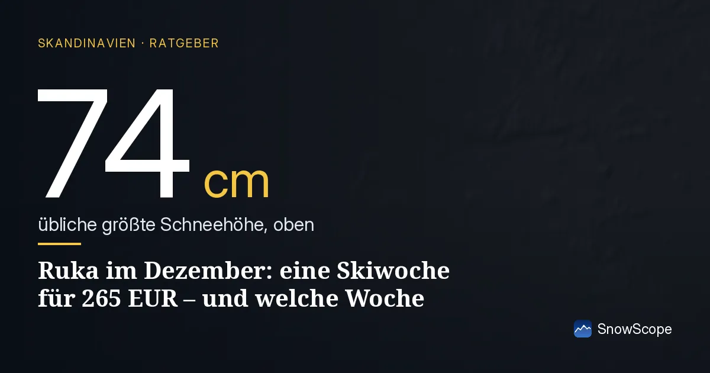

Ruka im Dezember: eine Skiwoche für 265 EUR – und welche Woche
Ein 6-Tage-Erwachsenenpass in Ruka kostet in der Saison 2026-27 EUR 265, einer der niedrigsten Festpreise für eine Woche weg. Der Schnee ist schwieriger: Anfang Dezember ist unsicher, aber ab Mitte des Monats drehen sich die Chancen deutlich in deine Gunst, mit einem Höhepunkt von 85% der Winter mit 30 cm oder mehr während der Weihnachtswoche.
Die Live-Schneeprognose für Ruka in der SnowScope-AppSchneehöhen, Pulverschnee-Alarme und 3D-Karte, gratis.
Wann du für die besten Schneeaussichten fahren solltest
Rukas Dezemberschnee wächst durch den Monat. In der ersten Woche (1.–7. Dezember) erreichten nur 39% der Winter 30 cm. Bis 8.–14. Dezember steigt das auf 61%, und ab Mitte des Monats (15.–21. Dezember) liegt man bei 72%. Die Weihnachtswoche (22.–28. Dezember) ist am sichersten: 85% der Winter hatten zu diesem Zeitpunkt 30 cm oder mehr.
Der typische erste Tag mit 30 cm Schneedecke ist der 5. Dezember, aber das variiert von Jahr zu Jahr. Wenn Anfang Dezember deine einzige Option ist, schau vorher auf die Schneekarte und rechne mit dünner Schneedecke.


Schneehöhe und Dicke durch den Monat
An einem typischen 15. Dezember hat Ruka 36 cm auf der ganzen Skiarea. Bis zum 24. Dezember steigt das auf 40 cm, und bis Silvester liegt man bei 46 cm. Das sind die Medianwerte aus 46 Wintern. In einem schwachen Jahr (1 von 10) rechne mit nur 20 cm am 15. Dezember; in einem schneereichen Jahr mit 46 cm.
Was du hier nicht findest, ist Pulverschneetiefe. Nur 4% der Weihnachtswochen erreichen 60 cm oder mehr. Was Ruka stattdessen bietet, ist konsistenter, kalter, präparierter Schnee, der durch die Saison hält. In 46 Wintern war der Boden am 15. Dezember nie ausgeapert.
Die Höhe macht fast keinen Unterschied
Ruka ist ein niedriger, gerundeter Berg mit 24 Liften verteilt über 25 km Pisten zwischen 286 m und 494 m. Weil das Gelände glatt und nicht sehr hoch ist, behandeln wir es in unserer Schneehistorie als eine Zone. Der Gipfel ist nicht messbar schneereicher als die Basis.
Diese Einheitlichkeit ist typisch für lappländische Berge. So weit nördlich bleibt es auch in einem wärmeren Winter kalt genug für eine Basis. Der eigentliche Faktor für Schneehöhe ist Breitengrad und Jahreszeit, nicht die Höhe auf diesen sanften Hängen.
Kosten und Timing für eine Budget-Woche
Der Preis von EUR 265 für 6 Tage ist fixiert, ohne Rabatte durch die Saison. Die gleiche Preisliste gilt für Pyhä-Luosto, 50 km nordwestlich, das auch 30 cm ab Mitte Dezember in 72% der Winter bietet. Die Ersparnis liegt nicht in einem billigeren Ticket, sondern darin, Termine außerhalb der Weihnachtsferien zu wählen, wenn Unterkunft einfacher und manchmal günstiger ist.
Eine Woche vom 15.–21. Dezember oder 8.–14. Dezember, wenn du flexibel bist, kann immer noch gutes Preis-Leistungs-Verhältnis für ein Bett bieten und hält die Schneeaussichten deutlich über 50%.
Was du mitnehmen und erwarten solltest
Dezember in Lappland ist dunkel. Ab Mitte des Monats geht die Sonne kaum auf, und zeitweise klettert sie gar nicht über den Horizont. Das Licht wird blau und rosa für ein paar Stunden am Nachmittag, und viel Skfahren passiert in der Dämmerung oder bei schwachem Tageslicht.
Die Kälte ist trocken und durchdringend. Bring eine gute Stirnlampe für Wege zwischen den Pisten mit, warme Fäustlinge, Gesichtsschutz und ordentliche isolierte Skistiefel. Die Stille der Berge und das seltsame Licht machen Dezemberskifahren hier wie nirgends sonst.
Tipps für Skifahrer
- Buche eine Woche ab 15. Dezember: 72% der Winter hatten in dieser Woche 30 cm, gegen nur 39% in der ersten Dezemberwoche.
- Die Weihnachtswoche (22.–28. Dez.) ist der sicherste Tipp; 85% der Winter erreichten 30 cm oder mehr. Plane eine volle Woche, wenn möglich, um den Wert deines EUR-265-Passes zu verteilen.
- Budget EUR 265 für den Liftpass, konzentriere dich dann auf günstiges Übernachtungsangebot vor dem Weihnachtshoch.
- Packe Kälteschutzausrüstung für 46–48°N auf Meereshöhe im Winter; die Kälte ist heftig aber trocken. Eine Stirnlampe ist unerlässlich, weil Tageslicht minimal ist.
- Schau ein paar Tage vor deiner Reise auf die Schneekarte; Dezember kann noch überraschen, und dünne Schneedecke Anfang des Monats kann Felsen verbergen.
Zu diesen Zahlen
Die Schneehöhen der Skigebiete sind der meiste Schnee in den oberen Hängen am angegebenen Tag; es sind Schätzungen für eine Fläche, keine Messung an einem Punkt. Prognosen können sich ändern. Lies vor dem Freeriden immer den offiziellen Lawinenlagebericht.
Offizielle Lawinenlageberichte: EAWS – European Avalanche Warning Services
Diesen Bericht zitieren
Für Forschung, Lehre oder Presse: Zahlen und Grafiken sind unter CC BY 4.0 mit dieser Quellenangabe frei nutzbar.
SnowScope (2026), Ruka im Dezember: eine Skiwoche für 265 EUR – und welche Woche, https://snowscope.app/blog/de/2026/11/ruka-december-skiing-finland-early-season-price.html, abgerufen am 2026-11-14
SnowScope (Atlas Labs). (2026, November 14). Ruka im Dezember: eine Skiwoche für 265 EUR – und welche Woche. SnowScope snow reports. https://snowscope.app/blog/de/2026/11/ruka-december-skiing-finland-early-season-price.html
BibTeX
@misc{snowscope2026rukadecemberskiingfinlan,
author = {{SnowScope (Atlas Labs)}},
title = {Ruka im Dezember: eine Skiwoche für 265 EUR – und welche Woche},
year = {2026},
month = nov,
howpublished = {\url{https://snowscope.app/blog/de/2026/11/ruka-december-skiing-finland-early-season-price.html}},
note = {Published 2026-11-14 16:44 UTC; accessed 2026-11-14}
}· CC BY 4.0 · Methoden, Daten und Werkzeuge →
Ruka: Schnee und Temperatur nach Höhe, dieser Winter vs letzter (Werkzeuge) →
Ruka folgen
Gratis: eine Nachricht, wenn Neuschnee kommt, und jeden Morgen die Vorhersage.